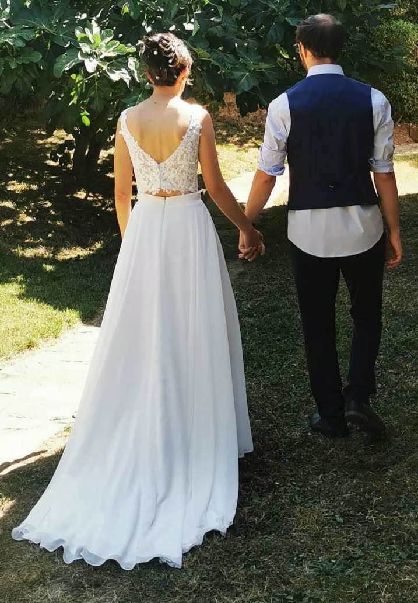
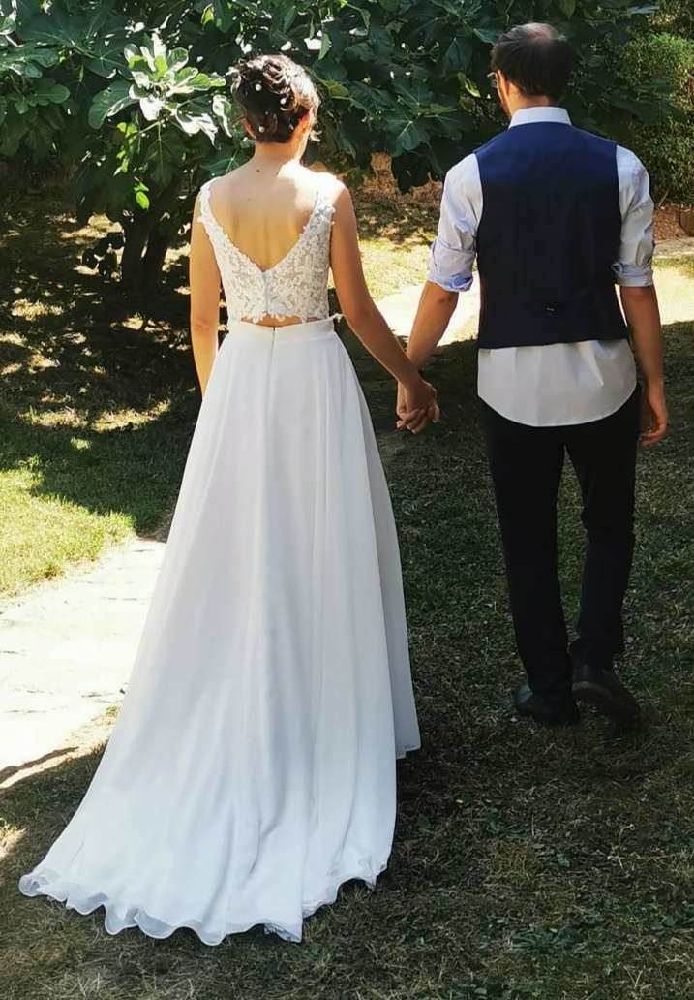

I recently got engaged with my partner


On my free time, I enjoy doing puzzles:

Some former activities I enjoyed doing during my high school and university years:
- Member of the AML (Computer Science students in Lyon) association during my university years. I also participated to the events they organized: Nuit de l'Info, running to get funds for breast cancer research, and many more!
- Team leader of my group for the Nuit de l'Info events, where the goal is to develop, in one night, a software on a given topic.
- Volunteer gymnastics coach for 7 years in my hometown for a group of 22 young gymnasts.